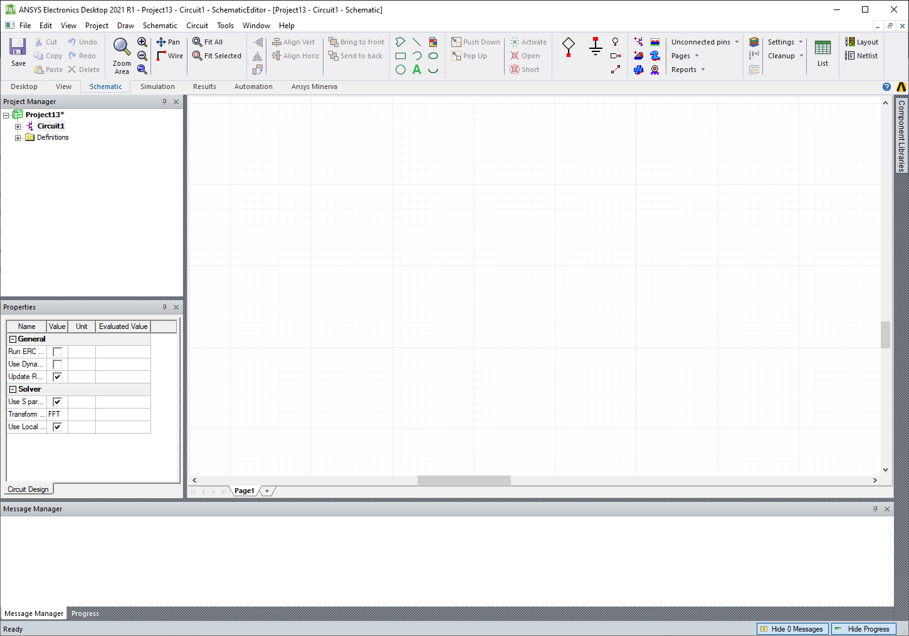

User Guide¶
This guide provides a general overview of the basics and usage of the PyAEDT library.
PyAEDT Overview¶
PyAEDT works both inside AEDT and as a standalone application. It automatically detects whether it is running in an IronPython or CPython environment and initializes the Desktop accordingly. PyAEDT also provides advanced error management.
AEDT can be started from python in mode using Desktop():
Launch AEDT 2021 R1 in Non-Graphical mode
from pyaedt import Desktop, Circuit
with Desktop("2021.1", NG=True):
circuit = Circuit()
...
# Any error here will be caught by Desktop.
...
# Desktop is automatically released here.
The command above will launch Electronics Desktop and initialize a new Circuit Design
{kind=link}
The same result can be obtained with the following code:
Launch the latest installed version of AEDT in graphical mode
from pyaedt import Circuit
with Circuit(specified_version="2021.1", NG=False) as circuit:
...
# Any error here will be caught by Desktop.
...
# Desktop is automatically released here.
Variables¶
PyAEDT allows an easy way to get and set Variables inside a Project or a Design.
User simply needs to initialize a variable as a dictionary key. if $ is used as prefix of the variable name then a project variable will be created
from pyaedt import Hfss
with Hfss as hfss:
hfss["dim"] = "1mm" # design variable
hfss["$dim"] = "1mm" # project variable

Modeler¶
Object oriented programming is used to create and manage objects in 3D/2D Modelers. You can create an object and change properties using getters or setters:
Create a box, assign variables, and assign materials.
from pyaedt.hfss import Hfss
with Hfss as hfss:
box = hfss.modeler.primitives.create_box([0, 0, 0], [10, "dim", 10],
"mybox", "aluminum")
print(box.faces)
box.material_name = "copper"
box.color = "Red"